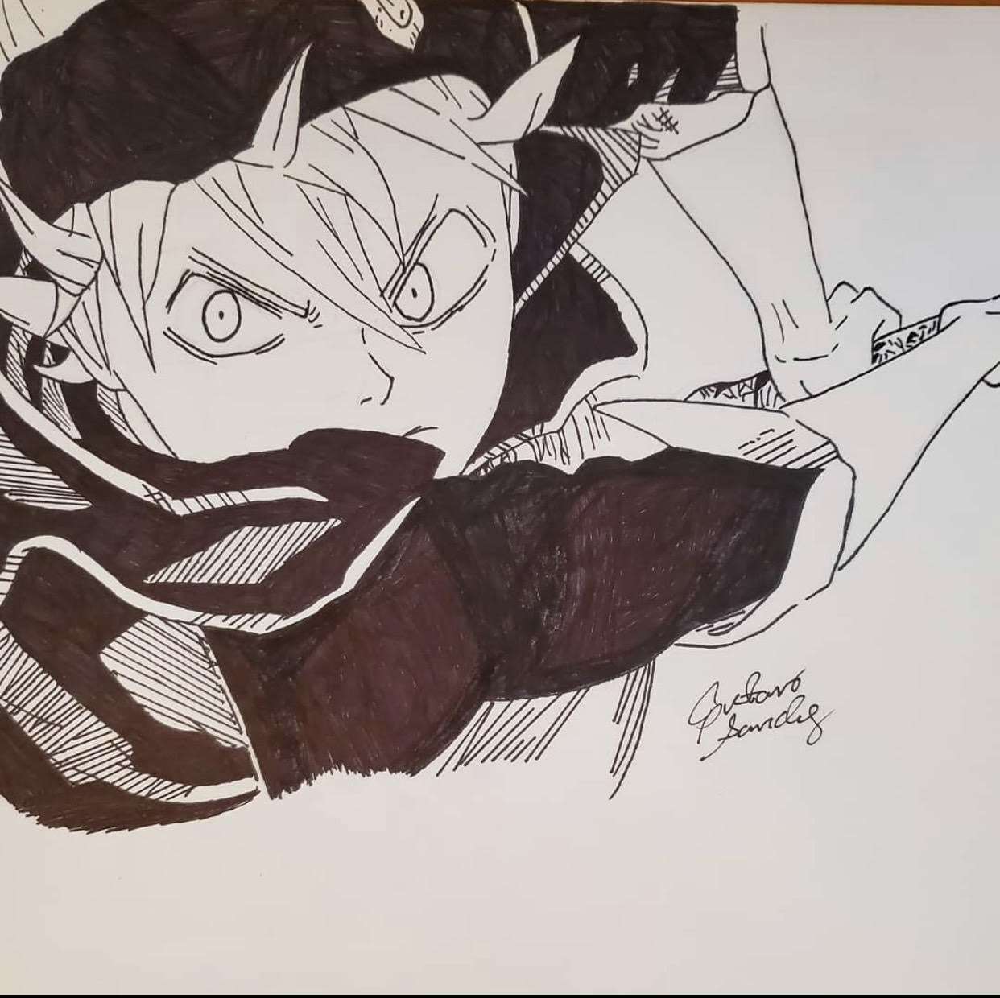
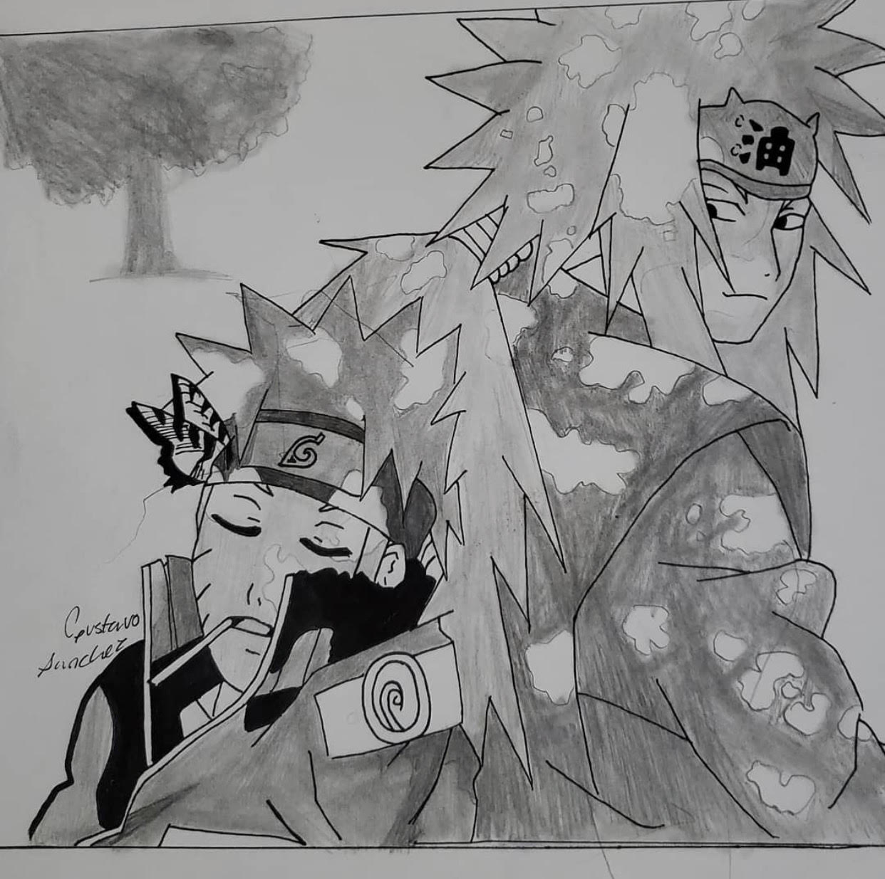
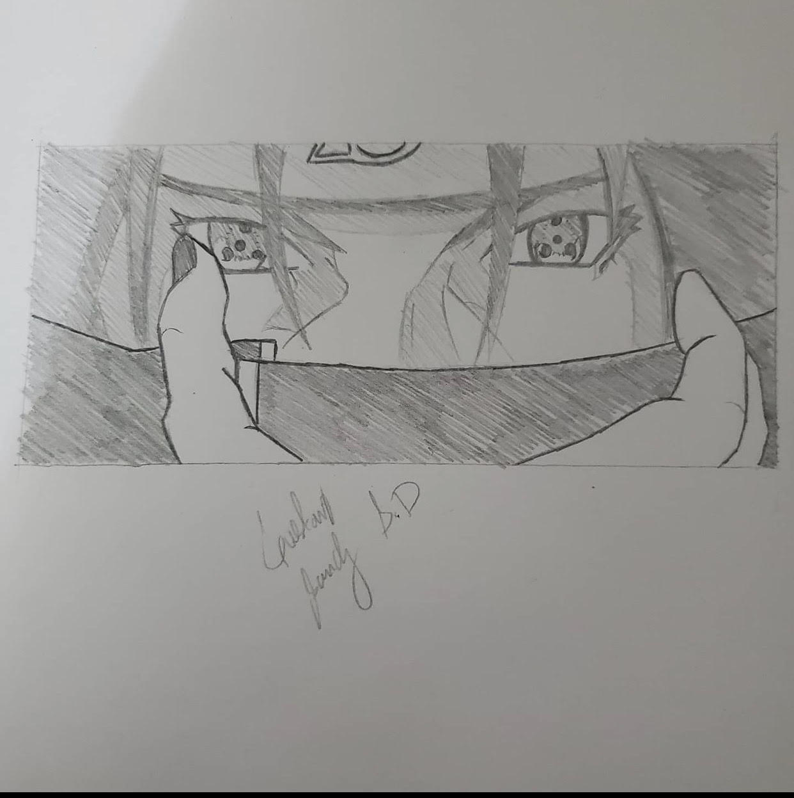

Art Showcase
Slide-Show of Artwork
- 
- 
- 
Each drawing was made by Gustavo, based on characters from different shows that he has watched and he does this to practice. To better prepare for drawing his own orginal characters that he plans to create for his own manga.